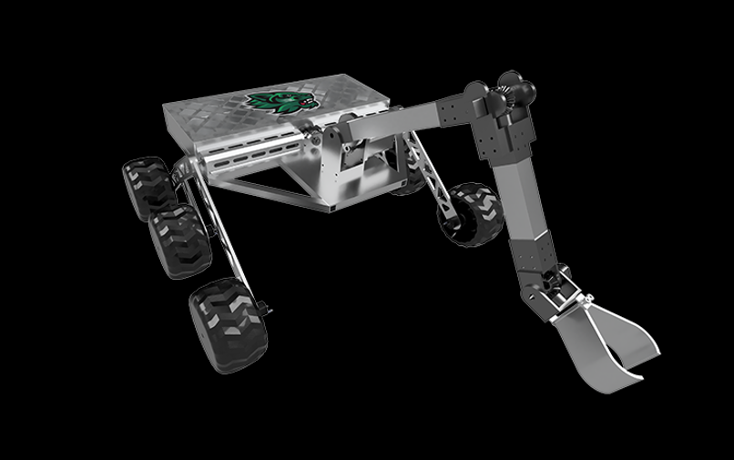
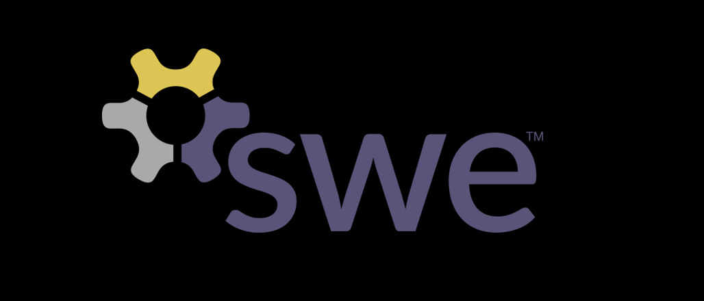
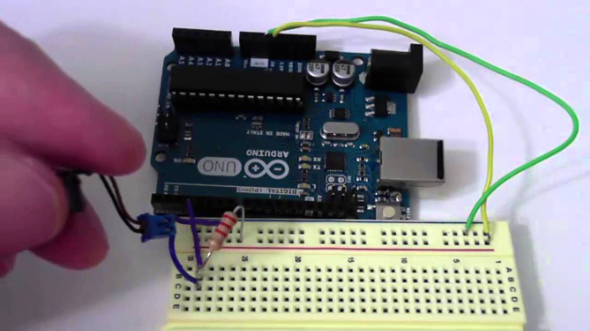
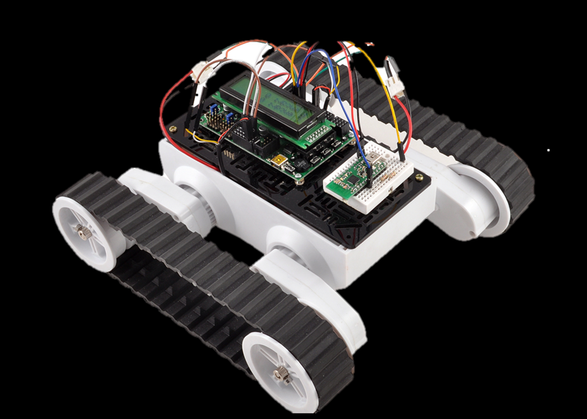
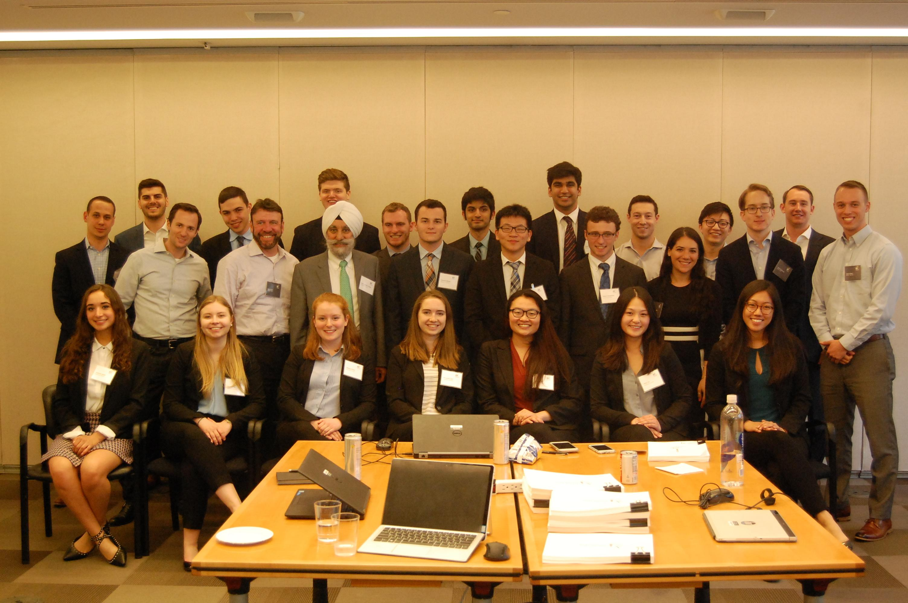
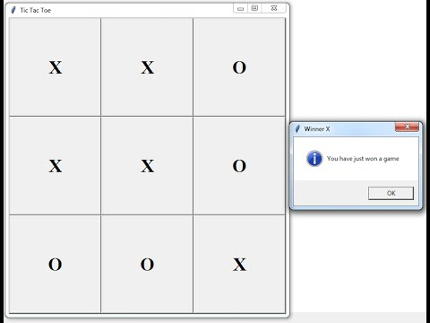

Click on an image to learn more about the project!
I have been a part of the Binghamton Mars Rover team for two years now and work on the electrical platform team. This year we worked on optimizing and documenting preexisting systems for battery management, motor controls, and safety.
I worked as the intern for an early stage startup looking to improve the hiring and employment process for job seekers. I worked with the tech lead to build and add content to the site using Wordpress, which is the main focal point of the business. We video conferenced weekly to discuss progress and I communicated frequently with the tech lead outside of those meetings. As we progressed with the development of the site, my work will most likely shifted into more testing and upkeep of the website.
I currently serve as the Treasurer for the Society of Women Engineers at Binghamton and, along with managing our finances, built a new website for the organization, teaching myself HTML and CSS along the way. I now lead a committee for maintenance and updates to the website.
Using my newly gained knowledge of web development, I also developed a seminar to teach SWE members how to create their own personal websites, using templates I created.
Check out binghamton-swe.org to see the SWE website!
I worked on a team of four people to design and build a laser tag game using the Arduino Uno. The game was themed around 'Cowboys vs. Aliens' and the Arduino was housed in vests designed to fit the theme. We hooked up three LEDs to glasses the players would wear and had the LEDs turn off in succession (to count down) to show the player when to turn around and shoot, old western stand-off style. Players would 'shoot' using a universal remote embedded inside a glove and had three IR receiver targets to aim for on each vest. The losing player's Arduino would play a sound when they're hit. I mainly worked on writing the code for the project and assisting with wiring up the vests. We placed 2nd out of 12 teams in our category.
There were two parts to this project, the second one building off the first. The first task of this project was to build a rover that could move to certain (x,y) coordinates. Using a Papilio duo microcontroller, Dagu 5 Rover, and the Xilinx logic program, my partner and I built the processor, ALU, registers, and instruction multiplexer using only logic elements. We wrote the instructions in assembly and then converted those to hex and stored them in the instruction set. The coordinates were input on the microcontroller's switches in hex.
The second part of this project was to rewire the rover so that it was connected to a receiver that could detect differences in color. Using C, we programmed the rover to autonomously complete a maze using a left bias algorithm.
This was a semester long case-study program based around the fictional 'Ernst Bank'. My team of four others and myself worked as cybersecurity risk consultants to identify the risk Ernst Bank faced and then developed a program to mitigate that risk. We came up with three solutions for the bank based off the results of an assesment tool we created, focusing on the five cybersecurity functions from the NIST Framework. As the only engineer on the team, I built the assesment tool using Python and the Tkinter module. We conferenced weekly with two consultants at EY to update them on our progress and receive critiques on our work. The project culminated in a presentation to EY executives at their Times Square Office.
This was a final project for an Object Oriented Programming class in Python. My partner and I coded a tic-tac-toe game using Tkinter to create the GUI. The game allowed two players to play against each other for multiple rounds of the game. It would keep track of wins, losses, and ties for both sides and had an added feature that allowed users to view a bar graph of the scores, using the matplotlib library. We also debugged, tested, and documented the project with a source code explanation and user's guide.